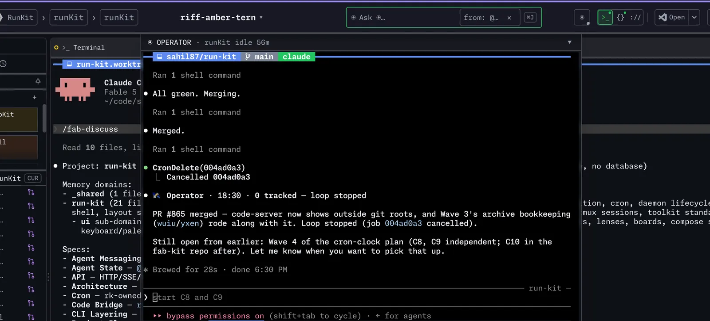
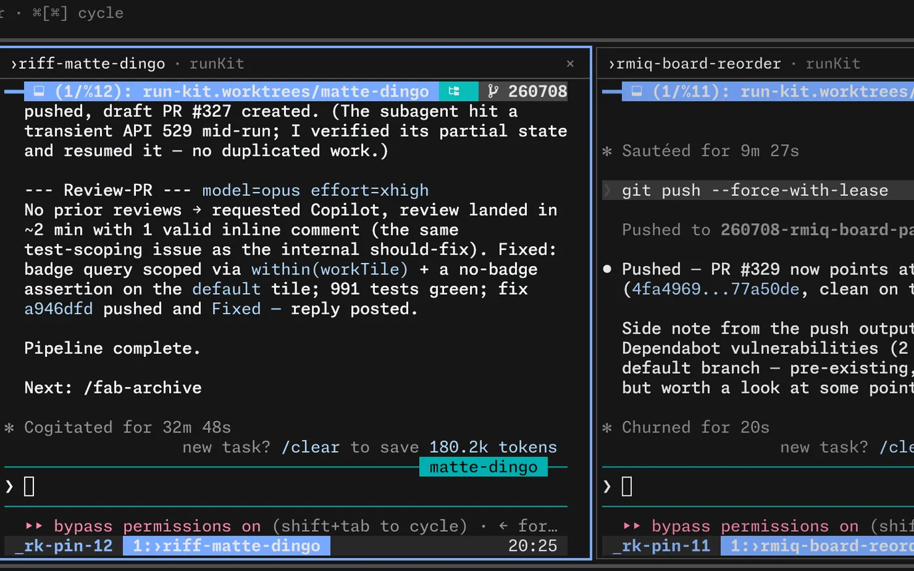

Your tmux, in the browser and on your phone.
Cockpit for the agent era.
Every session and pane as a live terminal, at your desk or on the couch. Nothing to configure, no database. State read straight from tmux.

Install this weekend
One line via Homebrew, tap trust handled. Start the daemon, open the dashboard, take the tour. Then spawn a workspace and tap it from your phone.
# the whole toolkit, one line $ curl -fsSL hexokit.com/install | sh # the dashboard, in its own tmux server $ rk daemon start $ open http://localhost:3000 # a worktree, a window, your agent $ rk riff --skill /fab-fff → 23:swift-fox · claude · building
First-class agent experience
Mostly what runs in those panes is coding agents, several at once. HexoKit never wraps them. It just makes them visible, and keeps them in check.

One agent watches the others
rk riff -N 3 starts three agents in three worktrees. rk operator opens a coordinator you talk to. It starts the next change, unblocks a stuck one, and pings your phone. One shortcut and its console slides down over any tab.
## Assumptions 1 Certain use the existing test runner S:50 R:95 A:100 D:100 2 Confident JSON error envelope S:55 R:80 A:85 D:90 3 Tentative default page size 50 S:45 R:70 A:40 D:35 4 Unresolved auth provider — asked S:10 R:15 A:10 D:15 $ fab score --check-gate 7ajq confidence 2.6 / 5.0 · gate 3.0 · blocked · run /fab-clarify $ fab score --check-gate 7ajq confidence 3.4 / 5.0 · gate 3.0 · pass
The agent plans before it builds
fab-kit scores every assumption the agent made. Four questions per decision: how clear was the signal, how reversible is it, can the agent know this, how many readings are there. The change starts at 5.0 and every weak decision costs points. Under 3.0 the gate closes and the pipeline tells you what to clarify. One risky guess stays visible; it is never averaged away.

Three agents and the dev server, side by side
Pin panes from any machine into a board. One dot per window says working, waiting or idle. The same board on your phone.
$ rk gui on
gui: on (Xtigervnc, :10, 1920x1080, icewm-session)
$ rk gui exec --detach google-chrome --app=http://localhost:3000
$ rk gui shot --json
{"ok":true,"path":"…/shot-1132.png"}
$ rk gui click 812 344
$ rk gui type "hexokit.com/docs" && rk gui key Return
$ rk gui windows
0x1e00007 chrome 1200×760Give the agent a screen
rk gui on puts a desktop in a tile beside your terminals. The agent opens apps, clicks, types and takes screenshots. You watch from anywhere. Off by default.
Agents of every kind report working, waiting or idle after a one-time setup. A pane is just as happily a build, a REPL, an ssh session, htop.
Six small tools, one job each
HexoKit is the base. Each tool adds one thing. Drop any one and the rest keep working. They compose through files, not a shared daemon.
/fab-newwt create flaky-tzidea add "…"tu --watchhop --all pullshll setup agentOne line, then you are in.
curl -fsSL hexokit.com/install | sh · tmux 3.4+ · MIT